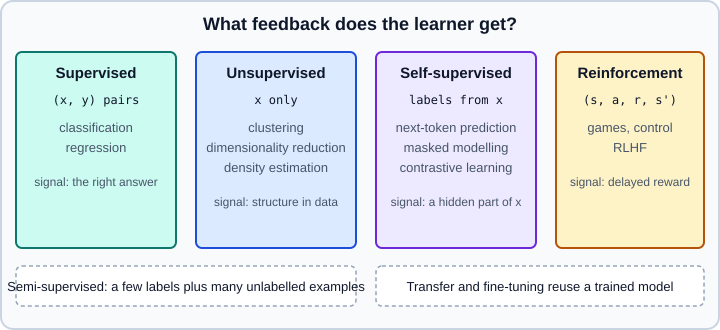

Types of Learning
|
This content was generated with the assistance of AI and should be verified against the official documentation before being relied on in production. |
This page was checked on 2026-10-30. It sorts machine learning problems by the kind of feedback the learner gets, which is the question that decides the algorithm family, the data you must collect and the evaluation you can run. The examples target Python 3.13, scikit-learn 1.9, PyTorch 2.15 and Gymnasium. Examples were run on Python 3.13 with scikit-learn 1.9.1, PyTorch 2.15 (CPU) and Gymnasium 1.4.0 on 2026-11-01. The previous page, What Is Machine Learning?, defines the vocabulary used here.
A map by feedback signal
The central distinction is what tells the model whether it is doing well.

The categories overlap in practice. A modern language model is pretrained with a self-supervised objective, fine-tuned with supervised examples and then tuned with a reinforcement-style preference signal, so one system passes through three of the columns. The labels are best read as descriptions of a training signal, not as classes of model.
| Type | Data | Typical tasks | Typical evaluation |
|---|---|---|---|
Supervised |
Inputs with labels |
Classification, regression, ranking, sequence labelling |
Held-out error or a metric on labelled data |
Unsupervised |
Inputs only |
Clustering, dimensionality reduction, density estimation, anomaly detection |
Indirect: internal indices, reconstruction error, downstream usefulness, human inspection |
Semi-supervised |
Few labelled, many unlabelled inputs |
Same as supervised when labels are expensive |
Held-out labelled data only |
Self-supervised |
Inputs only; labels are made from the inputs |
Pretraining of language, vision and audio models |
Pretext loss, then performance after transfer to a labelled task |
Reinforcement |
An environment that returns observations and rewards |
Control, games, sequential decisions, preference tuning |
Cumulative reward across episodes |
Supervised learning
In supervised learning every training example comes with the answer. The model learns a mapping \(x \mapsto y\) and is scored on examples whose answers it has not seen. Two main problem types differ in the label.
-
Classification predicts a category. Binary classification has two classes (spam or not), multiclass has more than two mutually exclusive classes, and multilabel allows several labels at once (a photo tagged with both "beach" and "dog"). Models usually output a score or probability per class, and a decision rule, often a threshold, turns it into a label. The threshold is a business choice, as decision threshold explains.
-
Regression predicts a number: a price, a duration, a temperature. Closely related variants are ranking (order items by relevance), count modelling, quantile regression (predict an interval, not a point) and forecasting with a time index, which needs time-aware validation.
Supervised learning is the best understood and most reliable setting, and its limit is the cost of labels. Labels may be noisy, biased, delayed (a loan default is known only years later) or expensive (a radiologist’s annotation). Label quality caps what the model can achieve, which is why error analysis on the labels themselves is part of every serious project.
from sklearn.datasets import load_breast_cancer
from sklearn.linear_model import LogisticRegression
from sklearn.model_selection import cross_val_score, train_test_split
from sklearn.pipeline import make_pipeline
from sklearn.preprocessing import StandardScaler
X, y = load_breast_cancer(return_X_y=True) # labelled data: a classification task
X_train, X_test, y_train, y_test = train_test_split(
X, y, test_size=0.25, random_state=0, stratify=y
)
clf = make_pipeline(StandardScaler(), LogisticRegression(max_iter=1000))
scores = cross_val_score(clf, X_train, y_train, cv=5, scoring="roc_auc")
print("cross-validated ROC AUC:", scores.mean())
clf.fit(X_train, y_train)
print("held-out accuracy:", clf.score(X_test, y_test))Source: scikit-learn: Supervised learning. The scaler lives inside the pipeline so that it is fitted on the training folds only; fitting it on all the data first would leak information, a pitfall covered in pipelines.
Generative and discriminative models
Supervised models also split by what they learn about the data. A discriminative model learns the conditional distribution \(p(y \mid x)\), or just a decision boundary, and nothing else: logistic regression, support vector machines, gradient-boosted trees and most neural classifiers. A generative model learns how the inputs themselves are distributed, either the joint \(p(x, y) = p(x \mid y)\,p(y)\) or \(p(x)\) alone, and can then classify with Bayes' rule, \(p(y \mid x) \propto p(x \mid y)\,p(y)\). Naive Bayes, linear and quadratic discriminant analysis and Gaussian mixtures are classic generative models; variational autoencoders, diffusion models and language models are the deep ones, covered in generative models.
| Discriminative | Generative | |
|---|---|---|
Learns |
\(p(y \mid x)\) or a boundary |
\(p(x \mid y)\) and \(p(y)\), or \(p(x)\) |
Strengths |
Usually lower error with enough data; fewer assumptions about how inputs are distributed |
Can sample new inputs, handle missing features and score how typical an input is; can need less data when its assumptions hold |
Weaknesses |
Cannot generate data or say whether an input is unusual |
Wrong assumptions about \(p(x \mid y)\) (such as naive Bayes' independent features) cost accuracy |
Ng and Jordan’s classic comparison found that a generative classifier can approach its best error with fewer examples, while the discriminative one reaches a lower error as the data grows. The example trains both on growing slices of the same data:
from sklearn.datasets import load_breast_cancer
from sklearn.linear_model import LogisticRegression
from sklearn.model_selection import train_test_split
from sklearn.naive_bayes import GaussianNB
from sklearn.pipeline import make_pipeline
from sklearn.preprocessing import StandardScaler
X, y = load_breast_cancer(return_X_y=True)
X_train, X_test, y_train, y_test = train_test_split(
X, y, test_size=0.25, random_state=0, stratify=y
)
for n in (20, 50, len(X_train)): # growing training sets
generative = GaussianNB().fit(X_train[:n], y_train[:n]) # models p(x | y) and p(y)
discriminative = make_pipeline(StandardScaler(), LogisticRegression(max_iter=1000))
discriminative.fit(X_train[:n], y_train[:n]) # models p(y | x) directly
print(f"n={n:3d} naive Bayes {generative.score(X_test, y_test):.3f}"
f" logistic regression {discriminative.score(X_test, y_test):.3f}")Output:
n= 20 naive Bayes 0.881 logistic regression 0.881 n= 50 naive Bayes 0.909 logistic regression 0.937 n=426 naive Bayes 0.923 logistic regression 0.958
Source: scikit-learn: Naive Bayes and Ng and Jordan (2001): On Discriminative vs. Generative Classifiers. Here the two tie at 20 examples and logistic regression pulls ahead as the data grows, because the features are strongly correlated and naive Bayes assumes they are not.
Unsupervised learning
With no labels, the model looks for structure in the inputs alone. The main families are:
-
Clustering groups similar examples (customer segments, document topics). Results depend strongly on the distance measure, the scaling of the features and the number of clusters, and there is no ground truth to check against. See clustering and Gaussian mixtures.
-
Dimensionality reduction and manifold learning compress many features into a few, for visualisation, noise removal or as input to another model. PCA is linear, while t-SNE and UMAP-style methods are nonlinear and mainly for visualisation. See decomposition and manifold learning.
-
Density estimation and anomaly detection model what normal data looks like and flag what does not fit. See outlier detection.
-
Representation learning, such as autoencoders and embeddings, learns a compact vector for each example. It is the bridge to deep learning and is covered in embeddings and representation learning and generative models.
from sklearn.cluster import KMeans
from sklearn.datasets import make_blobs
from sklearn.decomposition import PCA
from sklearn.metrics import silhouette_score
from sklearn.preprocessing import StandardScaler
X, _ = make_blobs(n_samples=600, centers=4, n_features=8, random_state=0) # the labels are discarded
X = StandardScaler().fit_transform(X)
for k in (2, 3, 4, 5, 6):
km = KMeans(n_clusters=k, n_init="auto", random_state=0).fit(X)
print(k, "silhouette:", round(silhouette_score(X, km.labels_), 3))
pca = PCA(n_components=2).fit(X)
print("variance explained by 2 components:", pca.explained_variance_ratio_.sum())Source: scikit-learn: Clustering. The silhouette score is an internal index that needs no labels, and it is only a hint: the number of clusters it prefers is not necessarily the number that is useful for the application. Choosing it by looking at the downstream result is usually more reliable.
Semi-supervised learning
Semi-supervised learning uses a small labelled set and a large unlabelled set. It matters when unlabelled data is cheap and labels are not, as in medical images or specialised text. The assumption that makes it work is that the structure of the unlabelled data is informative about the labels: points that are close or in the same cluster tend to share a label. When that assumption is false, the unlabelled data can hurt.
The two common approaches are self-training, where a model trained on the labelled part predicts labels for confident unlabelled points and retrains with them, and graph-based propagation, where labels spread along a similarity graph. In scikit-learn, unlabelled samples are marked with the label -1.
import numpy as np
from sklearn.datasets import make_moons
from sklearn.linear_model import LogisticRegression
from sklearn.semi_supervised import SelfTrainingClassifier
X, y = make_moons(n_samples=1000, noise=0.2, random_state=0)
rng = np.random.RandomState(0)
y_partial = y.copy()
unlabelled = rng.rand(len(y)) < 0.95 # hide 95 percent of the labels
y_partial[unlabelled] = -1 # -1 means "unlabelled"
base = LogisticRegression()
self_training = SelfTrainingClassifier(base, threshold=0.9).fit(X, y_partial)
print("labelled examples used:", (y_partial != -1).sum())
print("accuracy against all true labels:", self_training.score(X, y))Source: scikit-learn: Semi-supervised learning. The base estimator must implement predict_proba. The user guide’s own example still uses SVC(probability=True), which is deprecated in scikit-learn 1.9 with removal planned for 1.11; use LogisticRegression, or wrap a margin-based model in CalibratedClassifierCV (see calibration). Evaluate semi-supervised models only on a held-out set whose labels were never hidden and never used in fitting; scoring on the data used for training, as the short example above does for brevity, overstates the result.
Weak supervision is a related idea: noisy labels from heuristics, existing databases or other models are combined, instead of hand-labelling. It trades label accuracy for volume.
Self-supervised learning
Self-supervised learning creates labels from the data itself, by hiding a part of an example and asking the model to predict it. The task is called a pretext task, and it is not the real goal: the point is that solving it forces the model to learn useful representations, which are then reused. Because no human labelling is needed, it scales to the entire internet, and it is the foundation of modern language, vision and speech models.
-
Next-token prediction (causal language modelling) predicts each token from the previous ones. The label for position \(t\) is the token at \(t+1\). This is how GPT-style models are pretrained, as described in the LLM training pipeline.
-
Masked modelling hides tokens, image patches or audio frames and predicts them from the rest, as in BERT and masked autoencoders.
-
Contrastive learning pulls together two augmented views of the same example and pushes apart views of different examples, producing embeddings without labels.
-
Denoising trains the model to recover a clean input from a corrupted one, the idea behind denoising autoencoders and diffusion models.
The terms "unsupervised" and "self-supervised" are often mixed. The practical difference is that self-supervised training has an explicit prediction target and a loss like a supervised problem, only with automatically generated labels.
import torch
import torch.nn.functional as F
from torch import nn
vocab_size, d_model = 100, 32
class TinyLM(nn.Module):
def __init__(self):
super().__init__()
self.embed = nn.Embedding(vocab_size, d_model)
self.head = nn.Linear(d_model, vocab_size)
def forward(self, tokens):
return self.head(self.embed(tokens)) # (batch, time, vocab)
model = TinyLM()
optimizer = torch.optim.AdamW(model.parameters(), lr=1e-2)
tokens = torch.randint(0, vocab_size, (8, 17)) # stand-in for tokenised text
inputs, targets = tokens[:, :-1], tokens[:, 1:] # the labels are the input shifted by one
for step in range(5):
logits = model(inputs)
loss = F.cross_entropy(logits.reshape(-1, vocab_size), targets.reshape(-1))
optimizer.zero_grad()
loss.backward()
optimizer.step()
print(step, loss.item())Source: PyTorch tutorials: Build the neural network and torch.nn.functional.cross_entropy. The model sees no human labels; the target is the same text shifted by one position. A real language model replaces the embedding and linear layers with a transformer, as in attention and transformers, and adds a causal mask so that position \(t\) cannot see later tokens.
Reinforcement learning
In reinforcement learning an agent acts in an environment. At each step it observes a state, picks an action and receives a reward and a new state. There is no list of correct actions, only a scalar reward that may arrive long after the action that deserved it, so the agent must work out which of its past decisions were responsible (credit assignment) and must balance trying new actions (exploration) against repeating the best known one (exploitation).
The agent’s goal is to maximise the expected discounted return
\[ G_t = \sum_{k=0}^{\infty} \gamma^{k} r_{t+k+1}, \qquad 0 \le \gamma < 1 \]
where \(\gamma\) is the discount factor. Reinforcement learning fits sequential decision problems such as robotics, game playing, resource allocation and recommendation with long-term effects, and it is also used to tune language models from human preference signals. It is the most data-hungry and least stable of the settings, and it needs either a simulator or a safe way to experiment. The reinforcement learning page covers it in detail.
import gymnasium as gym
env = gym.make("CartPole-v1")
obs, info = env.reset(seed=0)
episode_return = 0.0
for _ in range(200):
action = env.action_space.sample() # a random policy
obs, reward, terminated, truncated, info = env.step(action)
episode_return += reward
if terminated or truncated:
break
env.close()
print("return of a random policy:", episode_return)Source: Gymnasium: Basic usage. Note the five return values of step: older Gym code returned four, with a single done flag, which Gymnasium split into terminated (the task ended) and truncated (a time limit stopped it). Install with pip install gymnasium; CartPole needs no extra dependencies.
Other ways to describe a learning problem
The supervision axis is not the only one. The following distinctions describe how and when learning happens, and they cut across the table above.
| Idea | Meaning |
|---|---|
Batch (offline) and online learning |
Batch learning trains on a fixed dataset and is retrained from scratch or on a schedule. Online learning updates the model example by example or in small chunks as data arrives, which suits streams and drifting data. In scikit-learn, estimators with partial_fit support it; in deep learning, continual training on streamed batches is the equivalent. Online learning is sensitive to bad data and to the learning rate, so it needs monitoring. |
Instance-based and model-based |
Instance-based methods (nearest neighbours) compare new examples to stored ones, and model-based methods fit a compact parametric or structural summary and discard the data. |
Parametric and non-parametric |
Parametric models have a fixed number of parameters, whatever the data size (linear models, fixed-size networks). Non-parametric ones grow with the data (nearest neighbours, kernel methods, many trees). |
Active learning |
The model chooses which unlabelled examples a human should label next, typically those it is least certain about, to spend labelling budget where it helps most. |
Transfer learning and fine-tuning |
Start from a model trained on a large related task and adapt it. The standard approach for images, text and audio; see transfer learning and foundation models. |
Multi-task and multi-label |
Share one model across several outputs. Multi-task learning shares representations across tasks, and multi-label gives several binary outputs for one example. |
Few-shot, zero-shot and in-context learning |
Few-shot learning adapts from a handful of labelled examples. Large language models can do this without updating any weights by reading examples in the prompt, which is called in-context learning; the prompting techniques page covers it. No parameters are learned in that case, so it differs from training in what persists after the call. |
Federated learning |
Train across many devices without centralising their data; only model updates are shared. Privacy risks remain, so it is not a substitute for privacy analysis. |
Choosing the type for a problem
Start from the data you have and the decision you need to support.
Three practical rules follow. If labels exist, begin with supervised learning, because it has the most reliable evaluation. If labels are scarce and a pretrained model exists for the domain, transfer learning usually beats semi-supervised methods on a small labelled set. And treat unsupervised results as hypotheses to validate with a domain expert or a downstream task, never as findings in themselves.
Common mistakes
-
Evaluating a semi-supervised or clustering method on the examples used to build it, which overstates quality.
-
Treating a cluster or a low-dimensional embedding as a ground truth about the data.
-
Running k-means or PCA on unscaled features, so that the feature with the largest numeric range dominates.
-
Calling every pretraining objective "unsupervised" and then expecting it to need no data cleaning: self-supervised pretraining inherits the biases and duplicates of its corpus.
-
Using reinforcement learning when supervised learning on logged decisions would do; the former is far harder to make stable.
-
Leaking the label into the input in a supervised problem, for example an "approved" flag recorded after the decision being predicted.